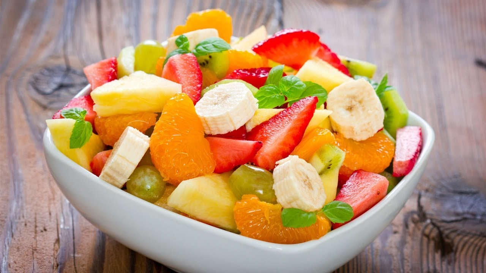

Inicio
Postres
Ensaladas
Platillos
Bebidas
Ingredientes para preparar un Coctel de Frutas:
Comprueba con esta receta los pasos para preparar un
Coctel de Frutas.
Ingredientes:
2 manzanas
1 trozo pequeño de sandia
1 melon mediano
2 mangos
1 copa de granadina
1 papaya pequeña
1 media crema
3 cdas de azucar
1 copita de oporto
pasos de preparacion:
1
.
Se cortan las manzanas en rebanadas delgadas y añada unas gotas de limon;
2
.
se sacan bolitas de sandia, de melon y de papaya.
3
.
Se corta en cubitos pequeños el mango.
4
.
Mezcle la crema, la copita de opporto, la copa de granadina y el azucar.
4
.
Ya listo esto se acomoda en una copa la fruta y las rebanadas de manzana coloque las al borde de la copa;
4
.
finalmente bañela con la mezcla anterior.